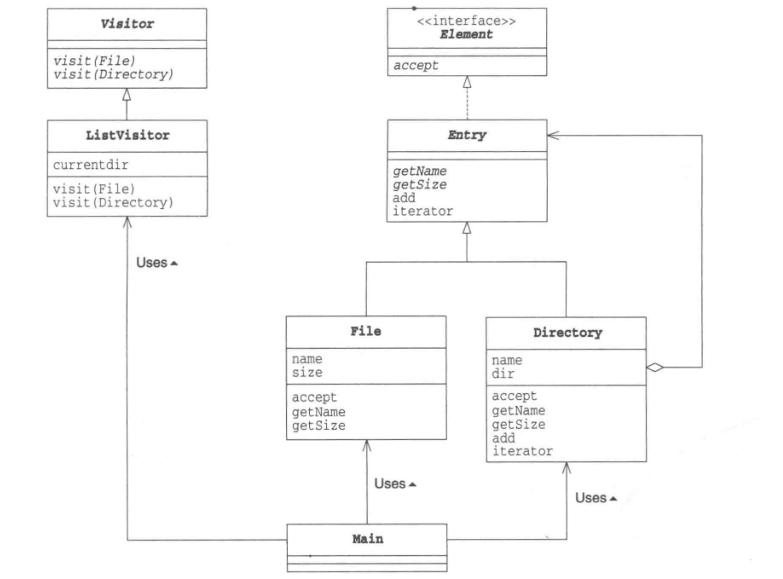
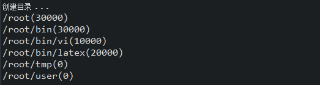
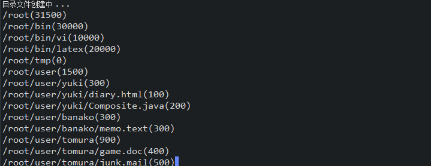

2018-1-9设计模式(六)————————Visitor模式学习笔记
结构
访问者模式表示一个作用于某对象结构中的各元素的操作。它使你可以在不改变各元素类的前提下定义作用于这些元素的新操作。以下示例类图:

主要用的是组合模式的访问代码，但是略作修改，结果不变(相当于整合了组合模式)。对数据结构中的元素进行处理的任务被分离，交给visitor类负责。实现了数据结构与处理的分离。
代码实现
Element类(数据结构者)
public interface Element {
public abstract void accept(Visitor v);//接受访问者
}
Entry类(结构实现)
跟组合模式的代码差不多就是多了实现Element方法，用于子类都能够添加具体的接受类。
public abstract class Entry implements Element{
public abstract String getName();//获得名字
public abstract int getSize();//获得大小
public Entry add(Entry entry);//加入目录条目
public String toString(){
return getName() +"("+getSize()+")";
}
}
Visitor类(访问者)
内置访问文件夹和访问文件的自定义方法。
public abstract class Visitor {
public abstract void visit(File file);//访问文件
public abstract void visit(Directory directory);//访问文件夹
}
ListVisitor类(访问实现类)
访问者在访问文件夹和文件的时候，对应有不一样的输出方式。依赖于Entry类，如果访问被相信，那么就会调用自身的访问方法。
public class ListVisitor extends Visitor{
private String currentdir = "";//当前访问的文件夹的名字
@Override
public void visit(File file) {//在访问文件时调用
System.out.println(currentdir +"/"+ file);
}
@Override
public void visit(Directory directory) {//在访问文件夹时调用
System.out.println(currentdir +"/"+ directory);
String savedir = currentdir;
currentdir = currentdir +"/"+ directory.getName();
Iterator it = directory.iterator();
while(it.hasNext()){
Entry entry = (Entry)it.next();
entry.accept(this);
}
currentdir = savedir;
}
}
Directory类(访问文件夹类)
依赖于Visitor类，如果相信访问者那么就会接受访问者的所有信息，允许访问当前的文件夹。
public class Directory extends Entry{
private String name;//文件夹名字
private ArrayList directory =new ArrayList<>();//文件夹中目录条目的集合
public Directory(String name){
this.name = name;
}
@Override
public String getName() {
return name;
}
@Override
public int getSize() {//获取大小 通过迭代器
int size = 0;
Iterator it = directory.iterator();
while(it.hasNext()){
Entry entry = (Entry)it.next();
size += entry.getSize();
}
return size;
}
public Entry add(Entry entry){//增加目录条目
directory.add(entry);
return this;
}
public Iterator iterator(){
return directory.iterator();
}
@Override
public void accept(Visitor v) {
v.visit(this);//观察当前的文件夹
}
}
File类(访问文件类)
依赖于Visitor类，如果相信访问者那么就会接受访问者的所有信息，允许访问当前的文件。
public class File extends Entry{
private String name;
private int size;
public File(String name,int size){
this.name = name;
this.size = size;
}
@Override
public String getName() {
return name;
}
@Override
public int getSize() {
return size;
}
@Override
public void accept(Visitor v) {
v.visit(this);
}
}
Main类(测试)
public class Main {
public static void main(String[] args){
System.out.println("目录创建中 ...");
Directory rootdir = new Directory("root");
Directory bindir = new Directory("bin");
Directory tmpdir = new Directory("tmp");
Directory userdir = new Directory("user");
rootdir.add(bindir);
rootdir.add(tmpdir);
rootdir.add(userdir);
bindir.add(new File("vi",10000));
bindir.add(new File("latex",20000));
rootdir.accept(new ListVisitor());//相信当前观察者
System.out.println("");
System.out.println("目录文件创建中 ...");
Directory yuki = new Directory("yuki");
Directory banako = new Directory("banako");
Directory tomura = new Directory("tomura");
userdir.add(yuki);
userdir.add(banako);
userdir.add(tomura);
yuki.add(new File("diary.html",100));
yuki.add(new File("Composite.java",200));
banako.add(new File("memo.text",300));
tomura.add(new File("game.doc",400));
tomura.add(new File("junk.mail",500));
rootdir.accept(new ListVisitor());//相信当前观察者
}
}
运行结果


访问者模式最后是通过accept方法进行输出的。个人理解为，文件夹先允许访问者访问，进入文件夹中，访问者通过自己的浏览方式进行浏览当前的文件夹。(因为是当前的文件夹，所以在参数方面就是this，来指代当前)。最后的实现逻辑，就在访问者的实现类中了。
模式优缺点
优点:
1、符合单一职责原则：凡是适用访问者模式的场景中，元素类中需要封装在访问者中的操作必定是与元素类本身关系不大且是易变的操作，使用访问者模式一方面符合单一职责原则，另一方面，因为被封装的操作通常来说都是易变的，所以当发生变化时，就可以在不改变元素类本身的前提下，实现对变化部分的扩展。
2、扩展性良好：元素类可以通过接受不同的访问者来实现对不同操作的扩展。
符合"开闭原则":对拓展(添加访问者的子类)是开放的，对修改(修改具体的访问流程)是关闭的。
缺点:
难以添加结构类的实现方式，比如在Element中在设计一个子类Device,那么就需要在访问类中添加这个访问的接口方法。(public abstract void Device(Device device);)同时，还要在所有的子类中都要实现这个接口。
适应情况
1、一个对象结构包含很多类对象，它们有不同的接口，而我们想对这些对象实施一些依赖于其具体类的操作。
2、需要对一个对象结构中的对象进行很多不同的并且不相关的操作，而你想避免让这些操作“污染”这些对象的类。Visitor模式使得你可以将相关的操作集中起来 定义在一个类中。
3、当该对象结构被很多应用共享时，用Visitor模式让每个应用仅包含需要用到的操作。
4、定义对象结构的类很少改变，但经常需要在此结构上定义新的操作。改变对象结构类需要重定义对所有访问者的接口，这可能需要很大的代价。如果对象结构类经常改变，那么可能还是在这些类中定义这些操作较好。
关键字词：设计模式、Visitor、访问者